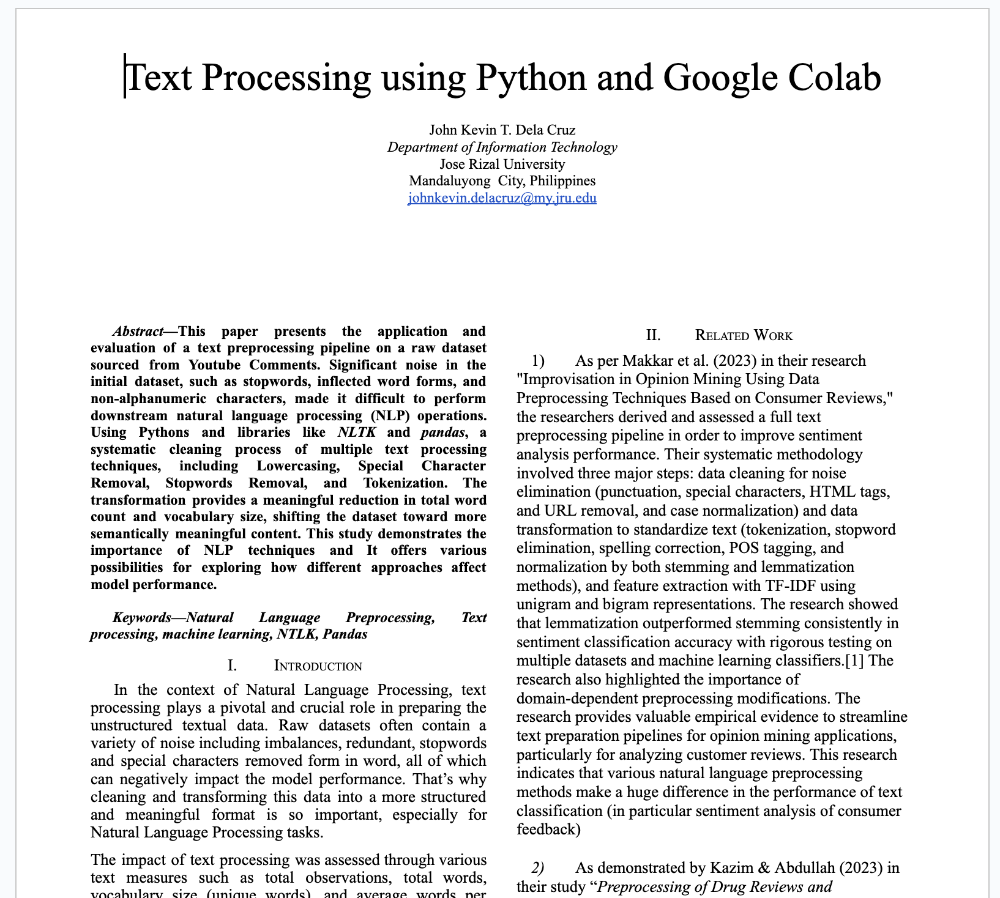
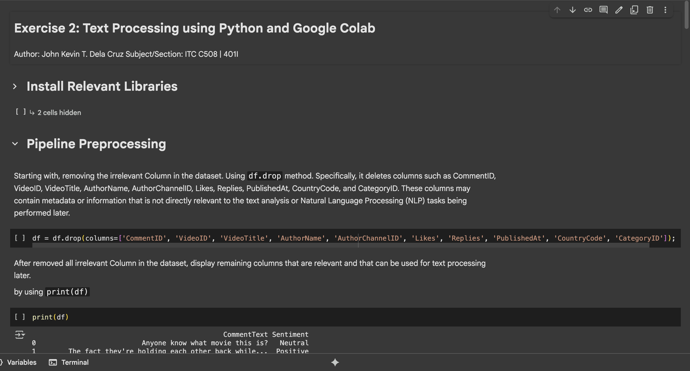

Exercise 2: NLP Text Preprocessing (Week 2)
- During this exercise, I studied topics from Lecture 1 (Machine Learning Concepts) and Lecture 2 (NLP Preprocessing).
- From lecture 1, I learned about the ultimate goals of AI, which is to provide a machines with ability to display human-like capabilities such as reasoning, learning, planning, and creativity. Additionally, the key types of machine learning problems, the difference between supervised and unsupervised learning like how machine learning learn with labeled training set like “email classification with already labeled emails”. On the other hand, the way how ML discover patterns in unlabeled data like “Cluster similar documents based on text”. Lastly, I acquired knowledge about deep learning what types of algorithms DL uses to learn from data.
- In Lecture 2: I focused on text data and how it is collected and processed. Text data can come from many sources, including article, books, and reports to social media posts, emails, and online reviews. This data is the raw material that NLP algorithms process to extract meaningful information and insights. As well as, the common data collection methods such as Web Scraping (I already have idea about this but I’m planning to used it in final project for this semester), Survey, Sensors and IoTs, and APIs.
- In completion of this laboratory exercise, I followed Mr. Raga provided google colab notebook and tweak it a little bit so I can fully understand the flow of codes. I also researched some existing codes in google so I can confirm that the provided code is standard. Additionally, I watched YouTube videos the importance of each text preprocessing pipelines and allowed me to apply this knowledge to practical scenarios.
- Most importantly, lecture 2 highlights the crucial first step in NLP where we clean and transform raw text data to make it easier for computer to understand, including Lowercasing, Special Character Removal, Stopword Removal, and Tokenization. These process are important in Natural Language Processing to clean, normalize, and transform raw text data into a structured format that computers and machine learning algorithms can understand more effectively.
- Overall, this exercise helps me clearly understand the text preprocessing and how it is very important before doing NLP tasks. Transforming raw text data into structured format it allows computer and machine learning algorithms to work effectively. Without this process, computers and machine learning algorithms can’t properly understand and process it, which leads to poor results.